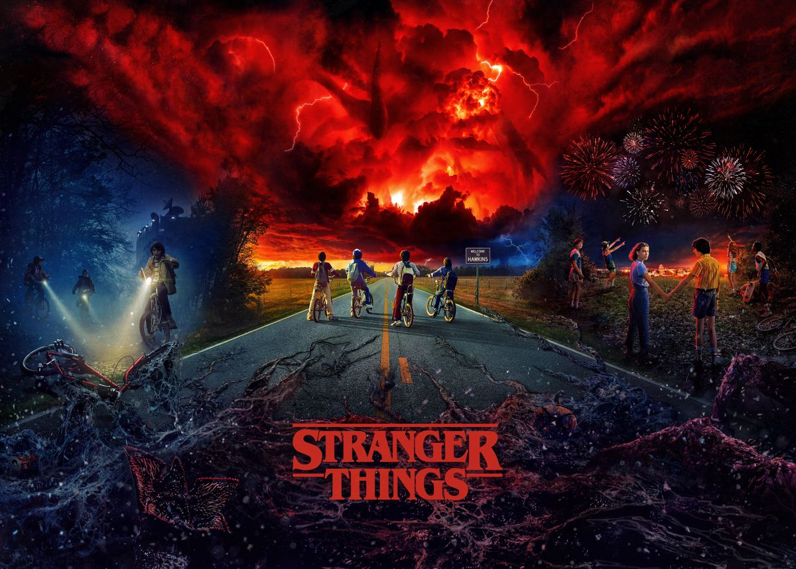

Dizi 1980'li yıllarda New York eyaletine bağlı bir liman kasabası olan Montauk'ta geçmektedir. Genç bir çocuk gizemli bir şekilde ortadan kaybolur. Ailesi, arkadaşları ve yerel polisler çocuğun ortadan kaybolması ile ilgili kapsamlı bir soruşturma başlatarak gerçeği açığa çıkartmaya çalışırlar. Olayın soruşturması derinleştikçe gizli hükümet deneylerinin yapıldığı olağanüstü bir gizemin içine çekilirler. Annesi (Winona Ryder) çocuğunu alabilmek için korkunç doğaüstü güçlerle yüzleşmek zorundadır. Aktör David Harbour kasabanın şerifi olarak dizide rol almaktadır.

The Witcher, büyücü Rivyalı Geralt'ın maceralarını takip ediyor. Yaratık avcısı Geralt, insanların geri kalan varlıklardan daha tehlikeli olduğu bu evrende hayatta kalmaya çalışır. Kader yollarını güçlü bir büyücü ve genç bir prensesle kesiştirdiğinde ise üçü birlikte sınırları zorlayan bir yo lculuğa koyulurlar. Andrzej Sapkowski'nin sekiz romandan oluşan fantastik serisi, hit video oyunu Witcher'ın da çıkış noktası olmuştu. Oyunun dünya çapında popüler olmasıyla birlikte romanlar, çizgi roman serisi ve masa oyunu olarak da piyasaya sürüldü. Lauren Schmidt Hissrich'in imzasıyla, 8 bölüm halinde ekrana taşınan "The Witcher" 2020'de Netflix'te izleyici karşısına çıkacak. Dizinin oyuncu kadrosunda Freya Allan, Anya Chalotra, Jodhi May, Mimi Ndiweni, Therica Wilson-Read, Millie Brady, Adam Levy, Björn Hlynur Haraldsson ve MyAnna Buring gibi isimler boy gösterecek.
Diğer dizi önerilerimiz sonra paylaşılacak olup süreç içinde çeşitlendirilecektir,anlayışınız için teşekkür eder iyi seyiler dileriz ♥